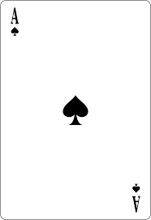
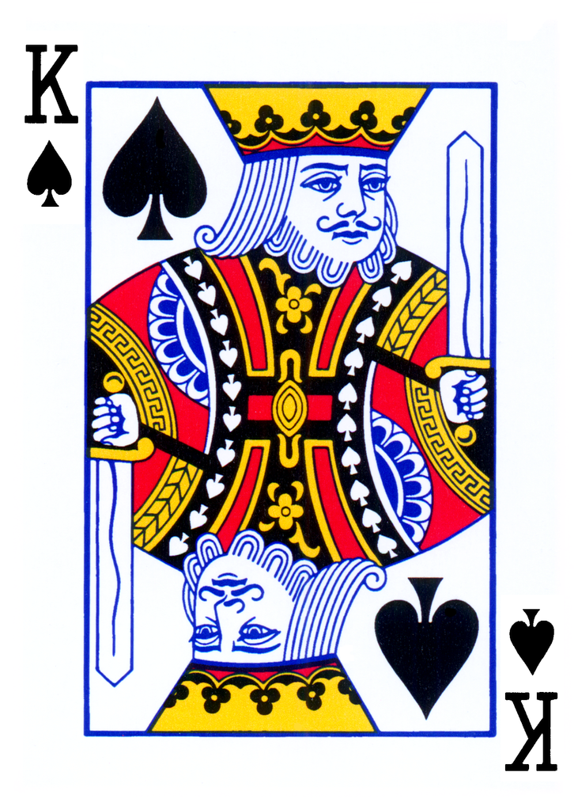
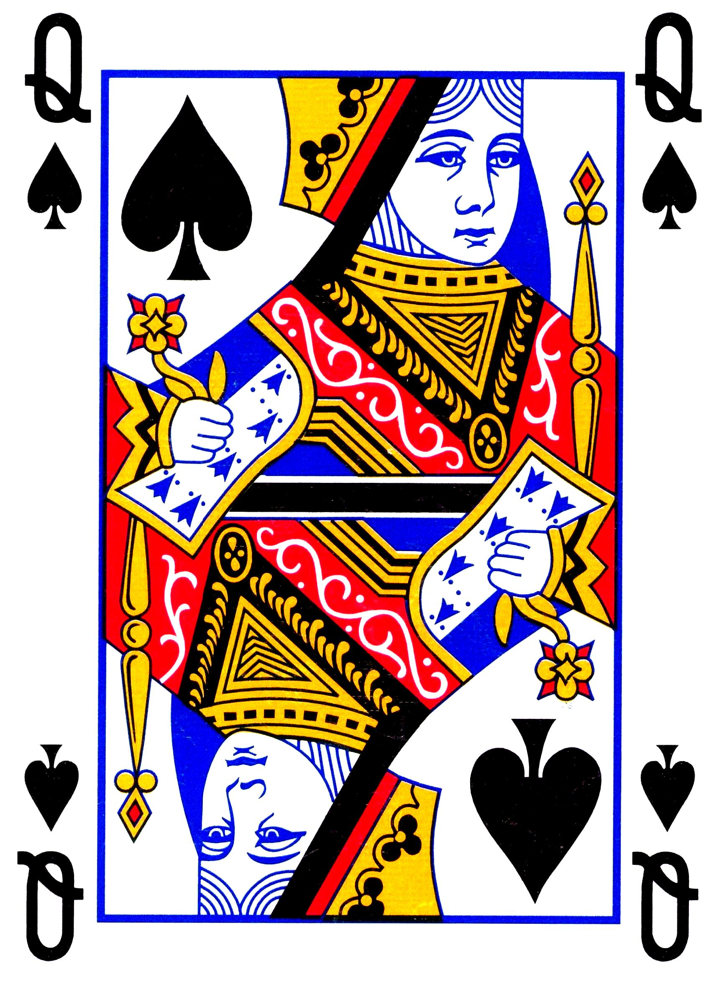
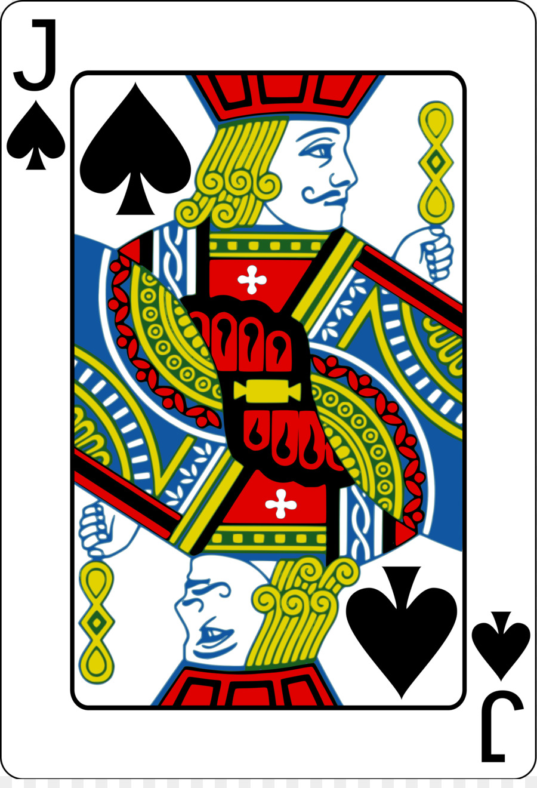
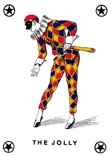

Soluzione:
\[
x = 0 \quad\text{oppure}\quad x = 3 \pm \sqrt{2}
\]
Esercizio 3
Per quali valori del parametro \(b\) la seguente equazione rappresenta una parabola che non interseca l'asse delle \(x\)?
\[
3x^2 - \left(2b -1\right)x +5b^2 = 0
\]
Soluzione
\[
b \lt \dfrac{-1 -\sqrt{15}}{28} \quad\text{oppure}\quad b \gt \dfrac{-1 +\sqrt{15}}{28}
\]
Esercizio 4
Avete 5 carte: K, Q, J, asso e joker.





In quanti modi potete disporle sul tavolo in una fila da 5?